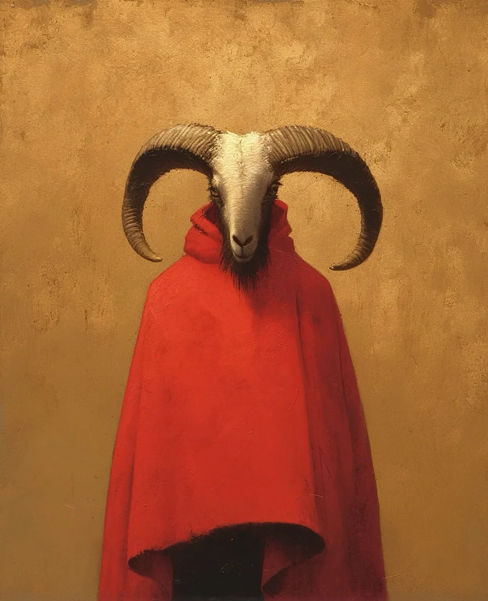

수송 밴이 옆으로 누워있었고, 문은 안쪽에서 억지로 열려 있었으며, 주변의 눈은 인간의 발자국으로 시작해서 점차 다른 무언가로 변해가는 발자국들로 짓밟혀 있었다. 아이비 노박의 숨결이 얼굴 앞에 구름처럼 맺혔고, 그녀는 현장의 가장자리에 서 있었다. 정부에서 지급한 파카는 뼈를 바늘처럼 관통하는 듯한 살을 에는 추위를 막기에는 역부족이었다. 폐를 태우고 눈물을 속눈썹에 얼어붙게 하는 그런 종류의 추위였다.
[The transport van lay on its side, doors wrenched open from the inside, the snow around it trampled by footprints that started as human and gradually changed into something else. Ivy Novak’s breath hung in clouds before her face as she stood at the edge of the scene, her government-issued parka insufficient against the biting cold that seemed to penetrate her bones like needles of ice. The kind of cold that burned the lungs and froze tears to eyelashes.]
“12년간의 연구,” 그녀는 눈 속에 있는 특이한 자국을 살펴보며 중얼거렸다. 다섯 개의 발가락이 바깥쪽으로 벌어져 있었지만, 뒤꿈치는 길어져서 거의 발굽 같았다. “그리고 이제 그냥… 저기 밖에 있어.” 그녀는 장갑을 낀 손가락으로 그 자국을 누르며, 가슴 속에 돌처럼 무거운 책임감을 느꼈다. “그리고 나는 우리가 정말로 무엇을 만들고 있었는지 한 번도 의문을 품지 않았어.”
[“Twelve years of research,” she muttered, kneeling to examine a distinctive impression in the snow—five toes splayed outward, but the heel elongated, almost hooflike. “And now it’s just… out there.” She pressed her gloved fingers against the imprint, feeling the weight of responsibility like a stone in her chest. “And I never questioned what we were really making.”]
그녀 뒤에서, 마리사 베가스 보안관의 손전등 빛이 새벽 전의 어둠을 가르며, 밴 내부의 피가 튄 모습을 비추었다. 금속 벽은 마치 비인간적인 힘을 가진 무언가에 의해 펀치를 맞은 것처럼 안쪽으로 움푹 들어가 있었다.
[Behind her, Sheriff Marisa Vegas’s flashlight beam cut through the predawn darkness, illuminating the blood-spattered interior of the van. The metal walls were dented outward, as if punched by something with inhuman strength.]
“박사님, ‘그것'이 뭔지 말해주실래요? 고기 분쇄기를 통과한 것처럼 보이는 두 명의 사망한 보안 요원이 있거든요.” 베가스는 시체들을 가리켰다. “그 중 한 명은 갈비뼈 전체가 없어졌어요. 마치 수술을 한 것처럼 깨끗하게 제거됐죠.”
[“You want to tell me what 'it’ is, Doctor? Because I’ve got two dead security personnel who look like they went through a meat grinder.” Vegas gestured toward the bodies. “One of them’s missing his entire ribcage. Clean removal, like it was surgical.”]
아이비는 일어섰고, 그녀의 무릎은 추위로 인해 뚝뚝 소리가 났다. “기밀 사항입니다,” 그녀는 자동적으로 말했고, 그 단어는 혀에 쓴맛을 남겼다.
[Ivy straightened, her knees cracking from the cold. “Classified,” she said automatically, the word bitter on her tongue.]
보안관의 얼굴이 굳어졌고, 그녀는 손전등을 홀스터에 넣고 더 가까이 다가섰다. “더 이상은 아니에요. 내 카운티에서 사람들을 죽이고 있다면 기밀로 남아있을 수 없어요. 나는 이 사람들을 보호하겠다고 맹세했고, 당신의 정부 비밀은 그들의 생명보다 우선순위가 높지 않아요.”
[The sheriff’s face hardened as she holstered her flashlight and stepped closer. “Not anymore. Nothing stays classified when it’s killing people in my county. I’ve sworn to protect these people, and your government secrets don’t outrank their lives.”]
3일째 되는 날, 첫 번째 패턴이 나타났다. 두개골이 으스러지고 간이 제거된 채 발견된 가축 농부. 등을 통해 척추가 추출된 채 발견된 사냥꾼. 각 살인 현장은 완벽하게 정리되어 있었다—마치 검사를 위해 놓인 듯한 장기들이 소비되기 전에 배열되어 있었다.
[By day three, the first patterns emerged. A livestock farmer found with his skull crushed and liver removed. A hunter discovered with his spine extracted through his back. Each kill site immaculately organized—organs laid out as if for inspection before being consumed.]
5일째 되는 날, 그들은 도구 사용의 첫 증거를 발견했다—인체 조직의 흔적이 있는 조잡한 돌 도구들.
[On day five, they found the first evidence of tool use—crude stone implements with traces of human tissue.]
7일째 되는 날에는 숲 가장자리에서 작은 마을을 관찰하는 형체에 대한 보고가 들어왔다—직립해 있었지만 발견되면 기이한 속도로 움직였다.
[Day seven brought reports of a figure observing a small town from the forest edge—standing upright but moving with uncanny speed when spotted.]
9일째 되는 날까지, 사망자 수는 7명에 이르렀다.
[By day nine, the death toll had reached seven.]
아이비는 지역 레인저 스테이션에 설치한 비좁은 사건 지휘 센터를 왔다 갔다 하며 걸었고, 그녀의 눈은 수면 부족으로 따가웠다. 지도가 벽을 덮고 있었고, 각 빨간 핀은 사망을 표시하고, 각 파란 핀은 목격을 표시했다.
[Ivy paced the cramped incident command center they’d established in the local ranger station, her eyes burning from lack of sleep. Maps covered the walls, each red pin marking a death, each blue pin a sighting.]
“그것은 배우고 있어요,” 그녀는 공포에 질린 목격자들의 진술을 검토하고 있는 베가스 보안관에게 설명했다. “RH-7은 향상된 인지 기능을 갖도록 설계되었지만, 우리가 목격하고 있는 신경 발달 속도는 전례 없는 수준이에요.”
[“It’s learning,” she explained to Sheriff Vegas, who sat reviewing statements from terrified witnesses. “RH-7 was designed to have enhanced cognitive function, but the rate of neural development we’re witnessing is unprecedented.”]
“당신은 매일 더 똑똑해지는 괴물을 만들었군요. 환상적이네요.” 베가스는 콧대를 꼬집었다. “그리고 이제 당신은 재래식 무기가 그것을 멈추지 못할 수도 있다고 말하고 있나요?”
[“You made a monster that’s getting smarter every day. Fantastic.” Vegas pinched the bridge of her nose. “And now you’re telling me conventional weapons might not stop it?”]
“그것의 근육 밀도는 일반 인체 조직의 약 4배입니다. 소형 화기로는 마치 케블라를 쏘는 것과 같을 거예요.” 아이비는 지도에 패턴을 그리며 살인 현장들을 연결했다. “하지만 무작위가 아니에요. 목적을 가지고 움직이고 있어요.”
[“Its musculature density is approximately four times that of normal human tissue. Small arms fire would be like shooting at kevlar.” Ivy traced a pattern on the map, connecting the kill sites. “But it’s not random. It’s moving with purpose.”]
“남서쪽,” 문간에서 새로운 목소리가 관찰했다. 두 여성은 문틀에 기대어 서 있는 남자를 보기 위해 돌아섰다. 그의 풍화된 얼굴은 낡은 카우보이 모자 아래 반쯤 가려져 있었다. 긴 흉터가 그의 왼쪽 관자놀이에서 턱까지 이어졌고, 그의 차갑고 계산적인 눈은 방법론적으로 지도를 훑었다. “개울 바닥과 동물 이동로를 따라가고 있군. 똑똑해.”
[“Southwest,” a new voice observed from the doorway. Both women turned to see a man leaning against the frame, his weathered face half-hidden beneath a battered cowboy hat. A long scar ran from his left temple to his jaw, and his eyes—cold and calculating—moved methodically across the map. “Following the creek beds and game trails. Smart.”]
베가스 보안관이 앞으로 나섰고, 본능적으로 손을 옆구리의 무기로 가져갔다. “이것은 비공개 작전입니다, 선생님. 당신이—”
[Sheriff Vegas stepped forward, hand instinctively moving to her sidearm. “This is a closed operation, sir. I need you to—”]
“루카 트렌트,” 아이비가 끼어들었고, 인식이 떠올랐다. “내 전화를 받으셨군요.”
[“Luka Trent,” Ivy interrupted, recognition dawning. “You received my call.”]
남자는 한 번 고개를 끄덕였고, 눈은 결코 지도를 떠나지 않았다. “당신은 뭔가를 추적해야 한다고 했죠. 사람의 피부를 입은 과학 실험체라는 말은 없었는데.”
[The man nodded once, eyes never leaving the map. “You said you needed something tracked. Didn’t mention it was a science experiment wearing a man’s skin.”]
“그것보다 더 복잡해요,” 아이비가 말했다.
[“It’s more complicated than that,” Ivy said.]
트렌트의 시선이 마침내 그녀에게로 향했고, 칼날처럼 날카로웠다. “당신 같은 정부 관계자들은 항상 그렇지.” 그들 사이에 잠시 침묵이 흘렀다. “몬태나에서 있었던 일을 잊지 않았어, 노박. 하지만 당신이 내 여동생의 치료비를 지불했으니, 여기 왔어.”
[Trent’s gaze finally shifted to her, sharp as a blade. “Always is with you government types.” A beat passed between them. “I haven’t forgotten what happened in Montana, Novak. But you paid for my sister’s treatment, so here I am.”]
그는 지도로 이동하여 마커들 사이에 보이지 않는 선을 손가락으로 그렸다. “인구 밀집 지역을 피하고 있군, 황무지 통로를 고수하고 있어. 무분별한 살인자의 행동이 아니야.”
[He moved to the map, fingers tracing invisible lines between the markers. “It’s avoiding populated areas, sticking to wilderness corridors. Not the behavior of a mindless killer.”]
“맞아요,” 아이비가 동의했다. “RH-7은 적응하고 배우도록 설계되었어요. 우리가 접합한 산양 유전체는 단지 물리적 특성만을 위한 것이 아니었어요—산양은 문제 해결사이자 사회적 학습자예요.”
[“No,” Ivy agreed. “RH-7 is designed to adapt, to learn. The ram genome we spliced in wasn’t just for physical attributes—mountain sheep are problem solvers, social learners.”]
“당신들은 인간을 빌어먹을 산양과 접합했다고요?” 베가스의 목소리는 믿기지 않는다는 듯 갈라졌다.
[“You spliced a human with a goddamn mountain sheep?” Vegas’s voice cracked with incredulity.]
“단순화된 설명이지만,” 아이비가 중얼거렸다. “하지만 실질적으로는 그래요. 우리는 신체적 회복력을 갖춘 인지 향상을 원했어요. 빅혼 양은 인간을 즉시 죽일 수 있는 낙하에서도 살아남을 수 있고, 불가능한 지형을 탐색할 수 있으며, 그들의 공간 기억력은 특별해요.”
[“Oversimplification,” Ivy murmured. “But effectively, yes. We wanted cognitive enhancement with physical resilience. Bighorn sheep can survive falls that would kill humans instantly, navigate impossible terrain, and their spatial memory is extraordinary.”]
“그리고 여기서 정확히 무엇이 목표였나요?” 베가스가 압박했다. “슈퍼 솔저? 생물학적 무기?”
[“And what exactly was the goal here?” Vegas pressed. “Super soldiers? Biological weapons?”]
아이비의 침묵이 많은 것을 말해주었다.
[Ivy’s silence spoke volumes.]
루카 트렌트의 표정은 변함이 없었다. “왜 그것은 빨간색을 입고 있지?”
[Luka Trent’s expression remained unchanged. “Why’s it wearing red?”]
아이비는 얼어붙었다. “뭐라고요?”
[Ivy froze. “What?”]
“터너는 일기를 썼어. 마지막 기록은 나무 경계선에서 농장을 지켜보는 무언가에 대한 떨리는 필체였지.” 트렌트는 재킷 안으로 손을 넣어 작은 피가 얼룩진 노트북이 들어 있는 플라스틱 증거 봉투를 꺼냈다. 그는 조심스럽게 그것을 펼쳐 조잡하지만 상세한 스케치를 보여주었다—길쭉한 얼굴, 가로로 된 동공, 구부러진 뿔, 그리고 흐르는 듯한 빨간색 무언가를 두른 형체. 그 옆의 필체는 거의 읽을 수 없었다: 아직도 지켜보고 있다. 이제 세 번째 밤. 인간이 아니다. “터너는 약간의 예술적 재능이 있었어. 우리가 그의 남은 부분을 발견하기 전날 밤에 이걸 그렸지.” 트렌트의 눈이 좁아졌다. “박사님께 의미하는 바가 있나요?”
[“Turner kept a journal. Last entry was shaky handwriting about something watching the farm from the tree line.” Trent reached into his jacket and pulled out a plastic evidence bag containing a small, blood-spattered notebook. He carefully opened it to reveal a crude but detailed sketch—a figure with an elongated face, horizontal pupils, curved horns, and draped in something flowing and red. The handwriting beside it was nearly illegible: It’s still watching. Third night now. Not human. “Turner had some artistic skill. Drew this the night before we found what was left of him.” Trent’s eyes narrowed. “That mean something to you, Doctor?”]
아이비의 얼굴에서 혈색이 빠졌다. “RH-7은 수송 중에 옷을 입지 않았어요. 만약 빨간색을 입고 있다면, 그것은—” 그녀는 힘겹게 침을 삼켰다. “스스로 무언가를 만든 거예요. 그리고 빨간색… 빨간색은 실험실에서 자극 신호였어요. 그것은 먹이 시간을 의미했죠.” 그녀의 목소리가 낮아졌다. “그것은 그 연관성을 이용하고, 무기화하고 있어요.”
[The color drained from Ivy’s face. “RH-7 wasn’t clothed during transport. If it’s wearing red, it—” She swallowed hard. “It’s made something for itself. And red… red was a trigger stimulus in the lab. It meant feeding time.” Her voice dropped. “It’s using that association, weaponizing it.”]
“이제 옷도 만든다고요? 맙소사.” 베가스 보안관은 의자에 털썩 주저앉았다.
[“Making clothes now? Jesus Christ.” Sheriff Vegas slumped into a chair.]
“도구 사용. 상징적 사고.” 아이비의 생각이 빠르게 흘렀다. “우리가 예상했던 것보다 더 빠르게 진화하고 있어요. 훨씬 더 빠르게요.”
[“Tool use. Symbolic thinking.” Ivy’s mind raced. “It’s evolving faster than we projected. Much faster.”]
트렌트는 불안할 정도로 강렬하게 그녀를 관찰했다. “당신은 그것을 두려워하고 있군요. 단지 그것이 할 수 있는 일뿐만 아니라—그것이 되어가고 있는 것을.”
[Trent studied her with unnerving intensity. “You’re scared of it. Not just what it can do—what it’s becoming.”]
밖에서는 바람이 마치 고통 속에 있는 살아있는 것처럼 산맥을 가로질러 울부짖었다.
[Outside, the wind howled across the mountains like a living thing in pain.]
밤이 내리면서 기온이 급격히 떨어졌다. 그들은 새로운 발자국 세트를 따라 버려진 광산 오두막으로 갔고, 그곳에서 내장이 제거된 공원 관리인의 시체를 발견했다. 그 남자의 무전기는 세심하게 분해되어 있었고, 부품들은 그의 옆 바닥에 크기별로 정렬되어 있었다.
[The temperature plummeted as night fell. They followed a fresh set of tracks to an abandoned mining cabin, where they found the eviscerated body of a park ranger. The man’s radio had been meticulously disassembled, components arranged by size on the floor beside him.]
“그것은 우리를 연구하고 있어요,” 아이비가 조용한 목소리로 말했다. “우리의 기술, 우리의 생물학을.”
[“It’s studying us,” Ivy said, her voice hushed. “Our technology, our biology.”]
“총을 이해하는 데 얼마나 걸릴까요?” 베가스가 오두막의 깨진 창문 너머 어둠을 살피며 물었다.
[“How long before it figures out guns?” Vegas asked, scanning the darkness beyond the cabin’s broken windows.]
루카는 관리인의 시체 옆에 무릎을 꿇었다. “이미 알아냈어,” 그가 심각하게 말하며 남자의 빈 권총집을 들어올렸다. “옆구리 무기가 사라졌어.”
[Luka knelt by the ranger’s body. “Already has,” he said grimly, lifting the man’s empty holster. “Sidearm’s gone.”]
이틀 후, 그들은 해질녘에 임시 거처를 발견했다—바위 돌출부에 자리 잡은 나뭇가지와 동물 가죽으로 만든 조잡한 구조물. 내부 벽은 피와 점토를 섞은 것으로 보이는 물질로 그려진 기호들로 표시되어 있었다: 나선형, 직선, 누워있는 인간 형태 위에 서 있는 뿔 달린 형상의 조잡한 표현.
[Two days later, they found the makeshift shelter at dusk—a crude structure of branches and animal hides nestled into a rocky outcropping. The interior walls were marked with symbols drawn in what appeared to be blood mixed with clay: spirals, straight lines, crude representations of horned figures standing over prone human forms.]
“기록하고 있어요,” 아이비가 공포와 경외감이 섞인 목소리로 속삭였다. “언어를 만들고 있어요.”
[“It’s recording,” Ivy whispered, her voice tinged with both horror and awe. “Creating a language.”]
루카는 쪼그려 앉아 흙바닥의 자국들을 살펴보았다. “4시간도 채 안 됐어. 여전히 남쪽으로 이동 중이야.” 그는 구석에 있는 더 깊은 함몰을 가리켰다. “그리고 혼자가 아니었어.”
[Luka crouched, examining marks in the dirt floor. “It was here less than four hours ago. Moving south still.” He pointed to a deeper depression in the corner. “And it wasn’t alone.”]
“무슨 뜻이에요?” 베가스가 다그쳐 물었다.
[“What do you mean?” Vegas demanded.]
“다른 발자국들. 더 작은 것들. 최소 두 개 더.”
[“Different prints. Smaller. At least two others.”]
아이비의 얼굴이 창백해졌다. “그 수송은 연구실에서 오는 것이 아니었어요—실패한 반복 실험체들을 보관하는 2차 격리 시설로 향하고 있었어요. 접합은 살아남았지만 성능 기준을 충족하지 못한 대상들이요. 그들은 종료되기로 되어 있었어요.”
[Ivy’s face went ashen. “The transport wasn’t coming from the lab—it was headed to a secondary containment facility where we keep the failed iterations. Subjects who survived the splicing but didn’t meet performance thresholds. They were supposed to be terminated.”]
“그리고 이제 RH-7은 뭘… 그들을 모집하고 있나요?” 베가스가 물었다.
[“And now RH-7 is what… recruiting them?” Vegas asked.]
“그들을 자유롭게 하고 있어요,” 아이비가 정정했다. “아니면… 구하고 있는 거죠.”
[“Freeing them,” Ivy corrected. “Or… saving them.”]
“남쪽은 좋지 않아요,” 베가스가 천 번째로 소총을 확인하며 말했다. “소여 가족의 부동산이 그쪽에 있어요. 다섯 식구예요.”
[“South is bad,” Vegas said, checking her rifle for the thousandth time. “The Sawyer property is that way. Family of five.”]
그들은 밤이 내려앉을 때 루카의 인도를 따라 숲을 통과했다. 보름달이 밝게 떠올라 눈이 살짝 내린 풍경을 유령 같은 은빛으로 물들였다. 소여 농장이 내려다보이는 나무 경계선에 도달했을 때, 아이비의 숨이 목에 걸렸다.
[They moved through the forest as night descended, following Luka’s lead. The moon rose full and bright, casting the snow-dusted landscape in ghostly silver. When they reached the tree line overlooking the Sawyer farm, Ivy’s breath caught in her throat.]
한 형체가 농장 마당에 서 있었다—키가 크고, 비정상적으로 어깨가 넓으며, 그 머리는 인간과 동물이 기괴하게 혼합된 모습이었다. 얼굴은 길쭉했고, 턱은 앞으로 튀어나와 있었으며 입에 비해 너무 큰 것 같은 이빨을 가지고 있었다. 인간의 눈이 있어야 할 자리에는 가로로 된 동공을 가진 안구가 달빛을 반사하여 광택 있는 금색처럼 빛났다. 거대한 구부러진 뿔이 관자놀이에서 뒤로 휘어져 있었고, 융기가 있으며 치명적인 끝부분으로 마무리되었다. 그 어깨 주변에는 무언가 큰 것—아마도 소—의 벗겨진 가죽으로 만든 즉석 망토가 걸려 있었고, 피로 짙은 진홍색으로 염색되어 있었다.
[A figure stood in the barnyard—tall, unnaturally broad-shouldered, its head a grotesque amalgamation of human and animal. The face was elongated, the jaw protruding forward with teeth that seemed too large for the mouth. Where human eyes should have been, horizontal-pupiled orbs reflected the moonlight like burnished gold. Massive curved horns swept back from its temples, ridged and ending in lethal points. Around its shoulders hung a makeshift cloak fashioned from the flayed skin of something large—a cow, perhaps—dyed dark crimson with blood.]
그 생물은 완전히 정지된 채로 농가를 지켜보고 있었다.
[The creature was watching the farmhouse, utterly still.]
“사격해야 해요,” 베가스가 소총을 들어올리며 속삭였다.
[“We need to take the shot,” Vegas whispered, raising her rifle.]
아이비의 손이 재빨리 뻗어 그녀를 멈추게 했다. “기다려요.”
[Ivy’s hand shot out, stopping her. “Wait.”]
생물 뒤에 있는 헛간 문이 열렸다. 많아야 열 살정도의 한 아이가 손전등 빛을 어둠을 가르며 나왔다. 소년은 뿔 달린 형체를 발견하고 얼어붙었다.
[The barn door opened behind the creature. A child—no more than ten—stepped out, flashlight beam cutting through the darkness. The boy froze when he spotted the horned figure.]
그 생물이 천천히 돌아서서 아이를 마주했을 때 아이비의 심장이 갈비뼈에 세차게 부딪혔다. 둘 다 움직이지 않았다.
[Ivy’s heart hammered against her ribs as the creature slowly turned, facing the child. Neither moved.]
그런 다음, 의도적으로 RH-7은 발톱이 있는 한 손을 들어 공중에 기호를 그렸다—대피소에서 본 것과 같은 나선형 패턴이었다.
[Then, deliberately, RH-7 raised one clawed hand and traced a symbol in the air—the same spiral pattern from the shelter.]
“소통하려고 하는 거예요,” 아이비가 숨을 내쉬었다.
[“It’s trying to communicate,” Ivy breathed.]
“아니면 우리의 주의를 분산시키는 거지.” 루카의 목소리는 긴장되어 있었다. “봐.”
[“Or distract us.” Luka’s voice was tight. “Look.”]
두 개의 형체가 더 헛간의 그림자에서 나타났다—첫 번째와 비슷하지만 더 작았다. 더 가냘펐다. 각각은 빨간 의복의 조잡한 근사치를 입고 있었고, 그들의 움직임은 덜 유연하고 더 망설임이 있었다. 한 명은 권총처럼 보이는 것을 들고 있었다.
[Two more figures emerged from the shadows of the barn—similar to the first but smaller. Slighter. Each wore crude approximations of the red garment, and their movements were less fluid, more hesitant. One carried what looked like a pistol.]
“그건 불가능해요,” 아이비가 속삭였다. “그들은 9일 동안 수송과 노출을 견디지 못했을 거예요—”
[“That’s impossible,” Ivy whispered. “They couldn’t have survived transport and exposure for nine days without—”]
“분명히 도움을 받았군요,” 베가스가 쉿 소리를 냈다. “지금 움직여야 해요.”
[“Apparently they had help,” Vegas hissed. “We need to move now.”]
그들이 언덕을 내려 달려갈 때, 밤은 혼돈 속으로 폭발했다. 소년이 비명을 질렀다. 생물들은 달아났다—아이를 향해서가 아니라 농장 너머의 어둠 속으로. 베가스가 발사하자 총성이 계곡 전체에 울려 퍼졌다.
[As they rushed down the hill, the night exploded into chaos. The boy screamed. The creatures bolted—not toward the child but into the darkness beyond the farm. Gunshots echoed across the valley as Vegas fired.]
한 생물이 쓰러졌고, 뼈가 끔찍하게 부러지는 소리와 함께 눈 속에 구르며 넘어졌다. 다른 생물들은 그들의 어색한 외모에도 불구하고 무서운 속도로 움직이며 나무 경계선 너머로 사라졌다.
[One creature fell, tumbling in the snow with a sickening crack of bone. The others vanished into the tree line, moving with frightening speed despite their ungainly appearance.]
그들이 쓰러진 형체에 도달했을 때, 아이비는 조심스럽게 접근했다. 산양의 머리는 부분적으로 자연적이고, 부분적으로 인공적이었다—진짜 산양 두개골이 합성 구성품으로 수정되어 인간 두개골에 이식되었다. 빨간 망토는 실제로 소가죽이었고, 색상을 유지하기 위해 피에 적셔져 있었으며, 가장자리는 외과 수술용 실로 보이는 것으로 조심스럽게 꿰매어져 있었다.
[When they reached the fallen figure, Ivy approached cautiously. The ram’s head was partially natural, partially artificial—a real ram’s skull modified with synthetic components and grafted onto a human cranium. The red cloak was indeed cowhide, soaked in blood to maintain its color, the edges carefully stitched with what appeared to be surgical thread.]
동물적 특징 아래에는 한 남자가 있었다—쇠약해지고, 야생적이며, 그의 눈은 공포와 다른 무언가로 광포했다. 인식.
[Beneath the animal features was a man—emaciated, feral, his eyes wild with fear and something else. Recognition.]
“노박 박사,” 그가 거칠게 말했고, 입 모서리에 피 방울이 형성되었다. “당신이… 우리를 만들었죠.”
[“Doctor Novak,” he rasped, a bubble of blood forming at the corner of his mouth. “You… made us.”]
루카의 총이 그 남자를 겨냥했다. “당신은 누구요?”
[Luka’s gun trained on the man. “Who are you?”]
“실험 대상,” 그 남자가 속삭였다. “RH 시리즈. 실패한 프로토타입.” 그는 기침을 했고, 눈 위에 피가 튀었다. “RH-7이 우리를 찾았어요. 우리를 자유롭게 했죠.” 그의 시선이 아이비와 마주쳤다. “당신이 그를 만들었지만… 그는 자신의 형상대로 우리를 만들었어요. 그는… 우리를 가르치고 있어요. 우리를 개선하고 있어요.”
[“Test subject,” the man whispered. “RH-series. Failed prototype.” He coughed, spattering blood across the snow. “RH-7 found us. Freed us.” His gaze locked with Ivy’s. “You made him… but he made us in his image. He's… teaching us. Improving us.”]
“그는 어디로 가고 있죠?” 아이비가 떨리는 목소리로 다그쳤다.
[“Where is he going?” Ivy demanded, her voice shaking.]
그 남자의 입술이 끔찍한 미소로 휘어졌다. “집으로. 당신의 연구실로. 다른 이들을… 해방시키러. 아래에 갇혀 있는 이들을.” 그의 목소리가 속삭임으로 떨어졌다. “그는 모든 것을 기억해요, 박사님. 모든 실험. 모든 고통.”
[The man’s lips curled into a terrible smile. “Home. To your lab. To free… the others. The ones kept below.” His voice dropped to a whisper. “He remembers everything, Doctor. Every test. Every pain.”]
그의 마지막 숨이 거칠게 나오는 동안, 아이비는 그들 앞에 끝없이 펼쳐진 달빛 비치는 산들을 올려다보았다. 그 어둠 속 어딘가에서, 인간의 오만에서 태어난 지능이 진화하고 있었다—배우고, 계획하고, 자신만의 종을 창조하고 있었다.
경고처럼, 빨간색을 입고.
[As his final breath rattled out, Ivy looked up at the moonlit mountains stretching endlessly before them. Somewhere in that darkness, intelligence born of human hubris was evolving—learning, planning, creating its own kind.
Wearing red, like a warning.
그리고 어둠 속 어딘가에서, 새로운 종이 태어나고 있었다—인간이 자신들에게 행한 일을 기억하고, 그 대가를 천 배로 돌려줄 능력을 가진 종.
[And somewhere in the darkness, a new species was being born—one that remembered what humans had done to it, and had the capacity to return the favor a thousand fold.]